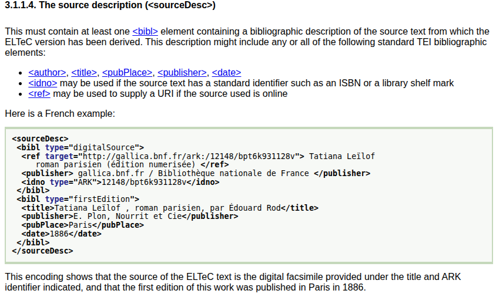

Partiell reusable: Zur Nachnutzung von Quellen für Korpora der Computational Literary Studies
Ulrike Henny-Krahmer (Universität Rostock)
FORGE-Konferenz, 25. September 2025 in Rostock.
Presentation: https://hennyu.github.io/forge_25/

Überblick
- Korpora in den Computational Literary Studies (CLS): Quellen und Standards
- Analyse von Reuse im ELTeC-Korpus
- methodischer Ansatz
- quantitative Perspektive
- qualitative Perspektive
- Fazit zu Reuse in den CLS
Korpora in den CLS: Quellen und Standards
Korpora in den CLS
- Computational Literary Studies (CLS): Teilfeld der DH, computergestützte (quantitative) Analyse literarischer Texte
- Aufbauen und Zusammenstellen von Textkorpora als wichtiges Arbeitsfeld
Korpora in den CLS
„The number of available corpora is large, and increases every year. [… M]any corpora are created for specific research purposes and are therefore as diverse as the projects they support.“ (Fileva 2023)
Korpora in den CLS
(Schöch 2017, 224; vgl. National Science Board 2005, 20–21)
Korpora in den CLS: Beispiele
|
DraCor (Fischer et al. 2019) |
|
|
ELTeC (Odebrecht et al. 2021) |
Korpora in den CLS: Rolle von Standards
- für projektbezogene Korpora: plain text
- für Gemeinschaftskorpora: XML-TEI
Korpora in den CLS: Formate von Quellen
- Text liegt noch gar nicht digital vor
- Text steht als Bilddigitalisat zur Verfügung
- es gibt bereits ein Volltextdigitalisat
- es gibt einen digitalen Volltext mit zusätzlichem strukturellem Markup (z.B. HTML, epub)
- Text liegt bereits als TEI-codierter Text vor
Korpora in den CLS: Nachnutzungsmöglichkeiten
Analyse von Reuse im ELTeC-Korpus
Methodischer Ansatz
- Nachnutzungen finden in CLS bereits statt (kontextabhängig)
- Hier: Fallstudie mit dem ELTeC-Korpus
- Untersuchung der Nachnutzung der Quellen von ELTeC (noch nicht des Reuse von ELTeC in anderen Zusammenhängen)
Methodischer Ansatz
- Frage 1: Welcher der fünf Verarbeitungsstufen sind die meisten Quellen der Texte in ELTeC zuzuordnen?
- Frage 2: Ist die Herkunft der Texte jeweils bis zum zugrundeliegenden analogen Text nachzuverfolgen? Und ist dies direkt im entsprechenden Zielkorpus dokumentiert?
Methodischer Ansatz
- Ansatz: Untersuchen der source descriptions in den einzelnen TEI-Dateien der Teilkorpora von ELTeC
- Bisher 7 von 14 Teilkorpora der Korpus-Version 1.1.0 untersucht
- Übernahme und Analyse der source descriptions in eigener TEI-Datei
Beispiel für eine Source Description aus ELTeC (1)
Taxonomie für Source Types
Taxonomie für Source Descriptions
Beispiel für eine Source Description aus ELTeC (2)
Beispiel: zusammenfassende Beschreibung für Quellen eines Teilkorpus
Quantitative Perspektive
Quantitative Perspektive
Qualitative Perspektive
Auszug aus einer zusammenfassenden Beschreibung der Quellen:
In many cases, only a first edition is indicated besides the digital source and no print edition (supposedly when the first edition corresponds to the underlying print edition, but I have not checked that in every case).
Qualitative Perspektive
Qualitative Perspektive
Fazit zu Reuse in den CLS
Fazit zu Reuse in den CLS
Fazit zu Reuse in den CLS
- Nachnutzung zu begrüßen
- erleichtert Erstellen neuer Korpora
- Grad der Nachnutzung: abhängig vom Material/Kontext
- wichtig aber: Herkunft der Texte sollte immer vollständig dokumentiert sein!
- plus: Art der Übernahmen/Anpassungen/Erweiterungen
Literaturhinweise
- Fileva, Evgeniia. 2023. “Introduction to Corpus Building.” In: Survey of Methods in Computational Literary Studies (= D 3.2: Series of Five Short Survey Papers on Methodological Issues), hrsg. von Christof Schöch, Julia Dudar und Evegniia Fileva. Trier: CLS INFRA. https://methods.clsinfra.io/corpus-intro.html, https://doi.org/10.5281/zenodo.7892112.
- Fischer, Frank, Ingo Börner, Mathias Göbel, Angelika Hechtl, Christopher Kittel und Carsten Milling. 2019. “Programmable Corpora: Introducing DraCor, an Infrastructure for the Research on European Drama.” In: DH2019. Complexities. Book of Abstracts. Utrecht: Utrecht University. https://doi.org/10.5281/zenodo.4284002.
- National Science Board. 2005. Long-Lived Digital Data Collections Enabling Research and Education in the 21st Century. Arlington. https://web.archive.org/web/20210227013747/http://www.nsf.gov/pubs/2005/nsb0540/nsb0540.pdf
- Odebrecht, Carolin, Lou Burnard und Christof Schöch, Hrsg. 2021. European Literary Text Collection (ELTeC), Version 1.1.0. COST Action Distant Reading for European Literary History (CA16204). https://doi.org/10.5281/zenodo.4662444.
- Schöch, Christof. 2017. “Aufbau von Datensammlungen.” In: Digital Humanities. Eine Einführung. Hrsg. von Fotis Jannidis, Hubertus Kohle und Malte Rehbein. Stuttgart: J.B. Metzler, 223–233.
- Schöch, Christof, Roxana Patras, Tomaž Erjavec und Diana Santos. 2021. “Creating the European Literary Text Collection (ELTeC): Challenges and Perspectives.” Modern Languages Open 2021 (1). https://doi.org/10.3828/mlo.v0i0.364.
Vielen Dank für die Aufmerksamkeit!
Präsentation:
https://hennyu.github.io/forge_25/